Import Documents
Couchbase Web Console provides a graphical interface for the importing of data, in both JSON and other formats.
Options for Importing Data
Data can be imported into Couchbase Server by means of the following:
-
The cbimport json command-line utility, which imports JSON documents.
-
The cbimport csv command-line utility, which imports data in CSV, TSV, and other delimited formats.
-
The interactive controls provided in the Couchbase Web Console Import Documents panel, itself located on the Documents screen; allowing import of JSON files, and also of CSV and TSV files.
The cbimport json and cbimport csv command-line utilities should be used in preference to Couchbase Web Console whenever high-performance importing is required; and especially when the data-set to be imported is greater in size than 100 MB.
For information on the cbimport command-line utilities, access the cbimport entry, in the CLI Reference, in the vertical navigation bar, to the left. The remainder of this page explains how to import data by means of Couchbase Web Console. Note the following prerequisites:
-
Data must be imported into a specific bucket. Therefore, before attempting to import, ensure that an appropriate bucket exists. If necessary, create a bucket, following the instructions provided in Create a Bucket. The procedures below assume that a bucket named
testBuckethas been created. -
Before attempting to import data with Couchbase Web Console, ensure that the Query Service has been deployed on the cluster: data-import with Couchbase Web Console depends on this service.
Accessing the Import Documents Panel
Access the Import Documents panel of Couchbase Web Console, as follows:
-
Left-click on the Documents tab, in the left-hand navigation bar:
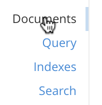 -
When the Documents screen appears, select the Import tab, on the horizontal navigation bar, near the top:
The Import panel is now displayed:
Understanding the Import Panel
The Import panel displays the following interactive graphical elements:
-
Select File to Import. A button that, when left-clicked on, displays a file-selection interface. This allows the user to select a single file that contains the data to be imported. To the right of the button is a link — file format details — that, when hovered over with the mouse-cursor, provides a pop-up notification of acceptable file-formats:
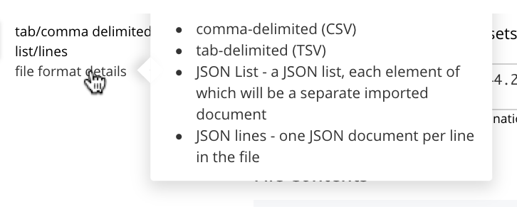These file-formats are described in the subsections below.
-
Parse File As. This field displays the type of the imported file: Couchbase Server will parse the data within the file, thereby creating one or more JSON documents; which will be stored in the Destination Bucket. The File Contents panel can be reviewed, to verify that Couchbase Server performs the conversion correctly.
Before any file has been selected, the default value, CSV, is displayed in the Parse File As field. However, when the user left-clicks on the Select File to Import button, Couchbase Server automatically determines the type of the selected file; displays the file-type in this field; and additionally displays, to the right of the field, the number of records that the file contains.
Should automatic file-type recognition ever result in the display of an incorrect file-type, the control at the right-hand side of the field can be used, to display a pulldown menu; which allows user-selection of the correct file-type. The menu appears as follows:
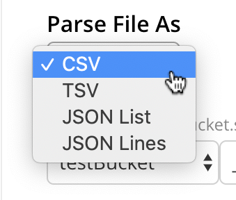The options CSV, TSV, JSON List, and JSON Lines, are described in the subsections below.
-
Keyspace. Three pulldown menus, which respectively display all buckets available on the cluster, the scopes in each bucket, and the collections in each scope. The selected bucket, scope, and collection are those into which data will be imported. For example:
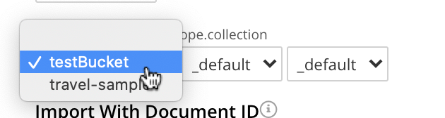 -
Import With Document ID. Two radio-buttons, which allow specification of how the id of the newly imported document is to be determined. Note that each document within a bucket is identified with a unique id.
The UUID option specifies that a Universal Unique Identifier be generated automatically, and used as the document’s id.
The Value of Field option specifies that the value that corresponds to a particular field within each document should be used as the document’s id: this option is only activated after a file has been selected for import. Selecting this option displays a pulldown menu, which lists those fields that are common to each document: this is demonstrated below, in Importing a JSON List. For any document to be imported, when the selected field contains a value that is unique across the selected bucket, the document will be imported into the bucket as a new document, with the unique value as its id. Conversely, when the selected field contains a value that is not unique across the bucket, the document will be imported into the bucket as an update to a document that is already resident within the bucket, and shares the id specified by the value.
-
The cbimport command-line display. This display changes dynamically, to indicate the cbimport command that could be used as an alternative way of performing the current import, based on the user’s ongoing addition of parameter-values into the UI.
-
File Contents. A read-only field that displays the contents of the imported file. The field provides three display options: these are Raw File, which displays the unformatted file-contents; Parse Table, which shows the file-contents as a table, with rows and columns; and Parse JSON, which shows the file as formatted JSON. Note that this field can be used in conjunction with the Parse File As pulldown menu, to verify the correct type and data-format of the file selected for import.
-
Import Data. This button is to be left-clicked on, when all appropriate details of the file to be imported have been entered: data-import is then commenced. Status on the operation is displayed immediately below the button. Note that if the operation takes a long time, the button’s label is changed to Cancel; at which point, by left-clicking, the user can cancel the import operation.
Importing a JSON List
To be imported, JSON documents must be specified in a file: the file itself must then specified as the target for import. Within the file, the documents can be specified in either of two ways: as a list, or as a series of lines.
The procedure for importing a JSON list can be demonstrated as follows.
-
Save the following JSON list, as a file named
list.json:[ {"name": "jane", "age": 22, "height": 5.2, "weight": 97}, {"name": "jack", "age": 18, "height": 5.9, "weight": 138}, {"name": "henry", "age": 47}, {"name": "susan", "age": 35, "height": 5.1, "weight": 110, "birth": {"dayOfBirth": 17, "monthOfBirth": 4}}, {"name": "david", "age": 43, "height": 5.11, "weight": 195, "birth": {"dayOfBirth": 3, "monthOfBirth": 12}} ]The file thus contains a JSON array of five elements. Each element is a document, containing multiple key-value pairs.
-
Within the Import panel, left-click on the Select File to Import button:
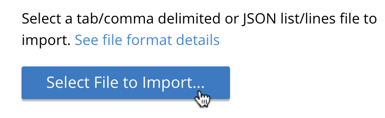The brings up the file-selection interface specific to the host operating system. Use this to select the file targeted for import. For example:
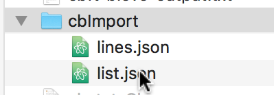When the file
list.jsonhas been selected, the Import Documents panel appears as follows: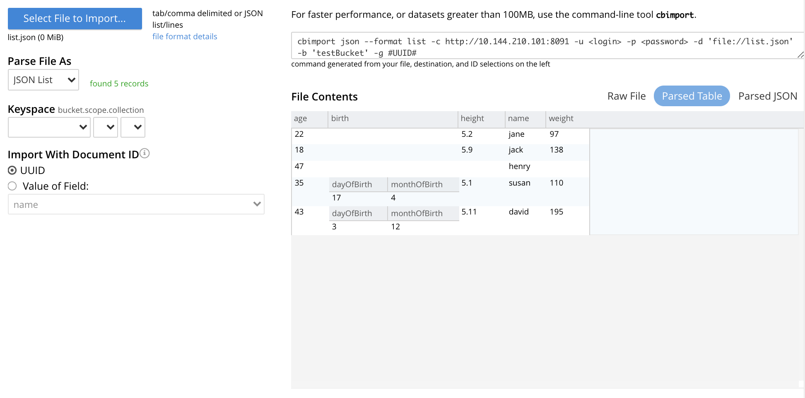The filename
list.jsonnow appears immediately below the Select File to Import button. The Parse File As menu displays JSON List, indicating that Couchbase Server has correctly recognized the file type. To the right of the Parse File As field, the number of records found in the file is displayed.Note that, under Import With Document ID, the Value of Field option has now become activated; and displays, as a default selection, a common field it has encountered — which is
name.Note also that the cbimport command-line display has changed, to incorporate the information so far entered by means of the user-interface.
The File Contents field now shows the file contents — by default, as a Parsed Table.
-
Specify a destination bucket, using the Destination Bucket pulldown menu. In this case,
testBucketis to be selected, with the_defaultscope and collection: -
Select a form of id for the documents to be imported. The Import With Document ID field provides two radio buttons. UUID specifies that an id is automatically generated for each document, by Couchbase Server. Value of Field allows choice of a field, common to all the listed documents: the value of the field, as it appears in each individual document, will be used as that document’s id.
For this instance, leave the default selection, UUID, unchanged.
Optionally, the File Contents can now be displayed in the available, alternative forms. To display
list.jsonas unformatted JSON, left-click on the Raw File tab: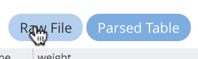The file
list.jsonnow appears, unformatted, in the File Contents panel: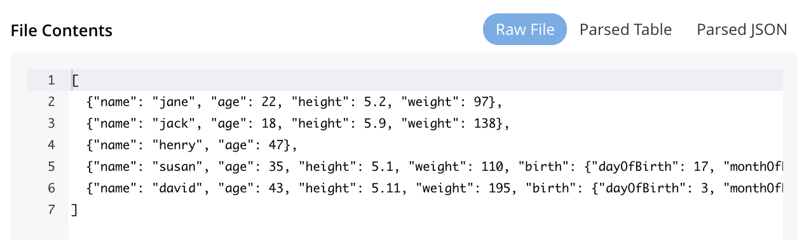Alternatively, left-click on the Parsed JSON tab:
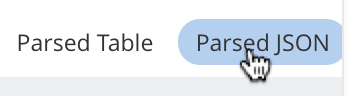The File Contents pane now shows a parsed version of the file
list.json, the initial section of which appears as follows: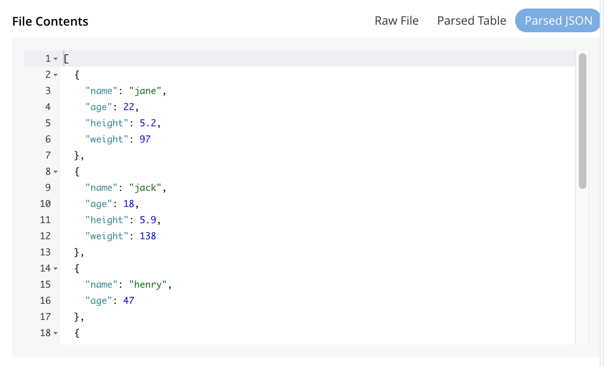 -
Import the file. Left-click on the Import Data button, located in the lower center area of the Import Documents panel.
The documents in the specified file are now imported. If the operation is successful, a notification appears at the lower left of the console:
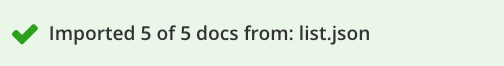 -
Check the imported documents. Left-click on the Workbench tab, on the horizontal, upper navigation bar:
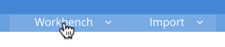This brings up the Edit panel, which now appears as follows:
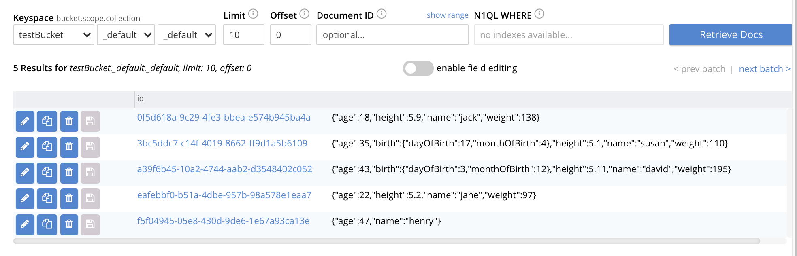The five documents contained in the file
list.jsonhave been successfully imported. Each has been automatically assigned an id. The documents can now be inspected and edited, by means of the Workbench.
Importing into Scopes and Collections
A collection is a data container, defined on Couchbase Server, within a bucket whose type is either Couchbase or Ephemeral. A scope is a mechanism for the grouping of multiple collections. A bucket can contain multiple scopes. Scopes and collections are described in Scopes and Collections. Step-by-step instructions for creating scopes and collections are provided in Manage Scopes and Collections.
The interactive Keyspace fields on the Import panel of the Documents screen allow scopes and collections, as well as buckets, to be specified as the target locations for document-import. In the previous example, the bucket testBucket was selected, but no change was made to the default scope and collection settings; which were both _default. (See Default Scope and Collection, for information.) However, administrator-created scopes and collections can be specified by means of the pulldown menus provided. For example, if the bucket testBucket contains a scope named testScope, within which is a collection named testCollection, these can be specified as follows:
At this point, the generated command, displayed at the upper right of the Import panel, is as follows:
As this shows, "testScope.testCollection" appears as the value for the --scope-collection-exp flag.
When the Import Document button is now left-clicked on, the contents of the json.list file are imported into the collection testCollection, which is within the scope testScope; which itself is within the bucket testBucket.
This can be validated by accessing the Documents panel, and specifying the appropriate keyspace:
Importing JSON Lines
A JSON Lines file is one that contains one or more JSON documents, each on a separate line. The following procedure demonstrates how to import such a file.
-
Save the following JSON lines file, as
lines.json:{"lastName": "smith", "employeeNumber": "0003456"} {"lastName": "roberts", "employeeNumber": "0007584"} {"lastName": "jones", "employeeNumber": "0005811"} {"lastName": "davis", "employeeNumber": "0009324"}The file thus contains four objects, each of which appears on its own line. Each object contains two fields, which are
lastNameandemployeeNumber. -
Access the Import panel of the Documents screen.
-
Left-click on the Select File to Import button, and select the
lines.jsonfile. On selection, the Parse File As field displays JSON Lines, and the File Contents field displays the following: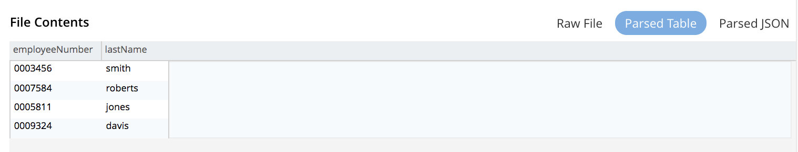 -
Select
testBucketwith default scope and collection, as the destination Keyspace. -
In the Import With Document ID panel, select the Value of Field option, and display the pulldown menu. This appears as follows:
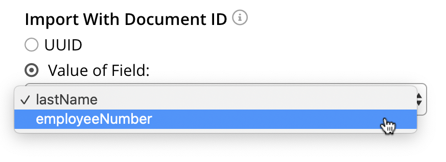Each
employeeNumberfield contains a unique value, and can therefore be used as the document id: therefore, select employeeNumber, as the value to be used. -
Import the document, by left-clicking on the Import Data button. When the Import Complete dialog confirms success, dismiss the dialog by left-clicking on its Continue button.
-
Examine the imported documents, by accessing the Workbench tab. The documents appear as follows:
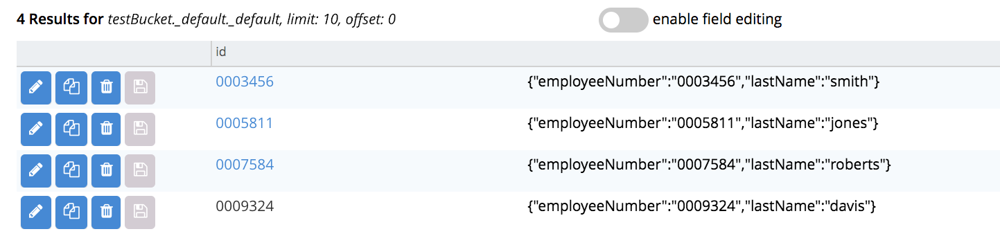
Thus, each document has been imported, with its employeeNumber value as the id of the document.
Importing CSV and TSV Files
To import a CSV (comma-separated values) file, proceed as follows:
-
Save the following, as
employees.csv:lname,empno smith,0003456 roberts,0007584 jones,0005811 davis,0009324 -
Access the Import panel, and use the select
employees.csvfor import, by means of the Select File to Import button. SelecttestBucketwith default scope and collection, as the destination Keyspace. The panel now appears as follows: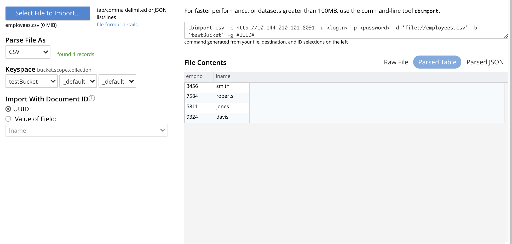 -
Under Import With Document ID, specify
empnoas Value of Field. -
Left-click on the Import Data button. The documents are imported, with the value of
empnois used as the id for each. -
Check the appearance of the documents, in the Workbench panel.
To import a TSV (tab-separated values) file, follow the same procedure, with a file named employees.tsv, containing the following:
lname empno smith 0003456 roberts 0007584 jones 0005811 davis 0009324
Handling Errors
If the contents of a file selected for import are inconsistent, Couchbase Server displays an error notification. For example:
-
JSON Parse Errors.
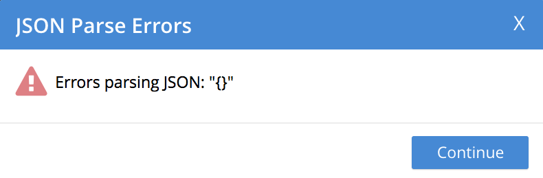Displayed when the JSON within a file is incorrect. For example, the JSON of a particular document is flawed (possibly due to a missing or redundant comma, or a missing curly brace); or the JSON array with a list file is missing a square bracket; or more than one document within a lines file appears on the same line.
-
Import Warning: No Records Found
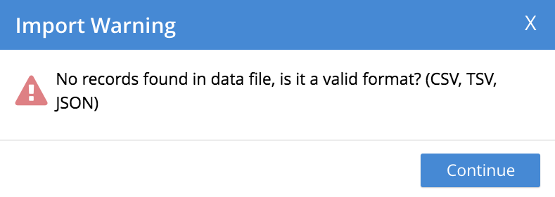Displayed when no records can be found within the specified file. This may be due to a file-naming error: for example, a JSON list has been saved as a
*.linesfile. -
Import Warning: Data-Type Unrecognized
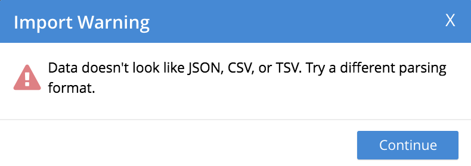Displayed when Couchbase Server cannot identify the data within the file as being of any supported type.
In each case, to remedy the problem, inspect the data within the file, ensure that it is properly formatted per document, and correctly laid out in accordance with the file-type; then retry.